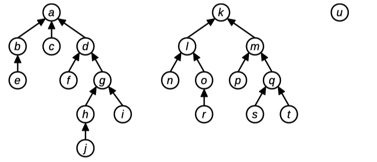

Section 2. Containers and Recursion¶
This week in section you’ll be practicing with collection types and reference parameters. These problems will get you some good practice with topics that you’ll see in assignment 2 and beyond. There’s a starter package linked below. Have fun!
Container Types¶
Iteration Station¶
Topics: Vectors, sets, stacks, range-based for loops, for loops, parameter passing
Below are a bunch of functions that attempt to iterate over a container of some type. For each function, determine whether
the function works correctly
the function compiles, but doesn’t correctly iterate over the elements, or
the function won’t even compile
In each case make sure you can explain why!
void iterateVec1(const Vector<int>& vals) {
for (int i = 0; i < vals.size(); i++) {
cout << vals[i] << endl;
}
}
void iterateVec2(const Vector<int>& vals) {
for (int i : vals) {
cout << vals[i] << endl;
}
}
void iterateVec3(const Vector<int>& vals) {
for (int i : vals) {
cout << i << endl;
}
}
void iterateStack1(const Stack<int>& s) {
for (int i = 0; i < s.size(); i++) {
cout << s.pop() << endl;
}
}
void iterateStack2(Stack<int> s) {
for (int i = 0; i < s.size(); i++) {
cout << s.pop() << endl;
}
}
void iterateStack3(Stack<int> s) {
while(!s.isEmpty()) {
cout << s.pop() << endl;
}
}
Solution
iterateVec1: This one works just fine!iterateVec2: This code will likely crash at runtime. The variableirefers to a value in theVector, not an index in theVector, so using it as an index will jump to a spot that wasn’t designed to be an index.iterateVec3: This code works just fine!iterateStack1: This code won’t compile. TheStackhere is passed in byconstreference, which means that it can’t be modified. However, calling.pop()modifies the stack.iterateStack2: This one fails for a subtle reason. Each iteration of the loop decreasess.size()by one. Coupled with the fact thatiis increasing by one at each point, this will only look at the first half of the stack.iterateStack3: This code works just fine! It does make a copy of theStack, but that’s okay given that the only way to see everything in a stack is to destructively modify it.
Debugging Deduplicating¶
(This problem by Marty Stepp)
Consider the following incorrect C++ function, which accepts as input a Vector<string> and tries to modify it by removing adjacent duplicate elements:
void deduplicate(Vector<string> vec) {
for (int i = 0; i < vec.size(); i++) {
if (vec[i] == vec[i + 1]) {
vec.remove(i);
}
}
}
The intent behind this function is that we could do something like this:
Vector<string> hiddenFigures = {
"Katherine Johnson",
"Katherine Johnson",
"Katherine Johnson",
"Mary Jackson",
"Dorothy Vaughan",
"Dorothy Vaughan"
};
deduplicate(hiddenFigures);
// hiddenFigures = ["Katherine Johnson", "Mary Jackson", "Dorothy Vaughan"]?
The problem is that the above implementation of deduplicate does not work correctly. In particular, it contains three bugs. Find those bugs, explain what the problems are, then fix those errors.
Solution
There are three errors here:
Calling
.remove()on theVectorwhile iterating over it doesn’t work particularly nicely. Specifically, if you remove the element at indexiand then incrementiin theforloop, you’ll skip over the element that shifted into the position you were previously in.There’s an off-by-one-error here: when
i = vec.size() - 1, the indexingvec[i + 1]reads off the end of theVectorThe
Vectoris passed in by value, not by reference, so none of the changes made to it will persist to the caller.
Here’s a corrected version of the code:
void deduplicate(Vector<string>& vec) {
/* Notice that we omitted the traditional i++ here
* in the for loop, we don't necessarily want to
* i++ on each iteration of the for loop.
*/
for (int i = 0; i < vec.size() - 1;) {
if (vec[i] == vec[i + 1]) {
vec.remove(i);
} else {
i++;
}
}
}
Boustrophedon Writing¶
Some languages, like English, are read from left-to-right. Others, like Arabic, are read from right-to-left. And some languages are sometimes in a pattern called boustrophedon where the direction of reading alternates from line to line. The first line is read left-to-right, the next right-to-left, then left-to-right, etc. For example, here’s some text written in boustrophedon:
Those wh
w wenk o
hat was
no gniog
here mus
w ekam t
ay for t
onk esoh
w little
el dnA .
ss than
.elttil
And fina
l sa yll
ittle as
.gnihton
Write a function
string fromBoustrophedon(const Grid<char>& message);
that takes as input a grid of letters written in boustrophedon, then returns a single string corresponding to the message in the grid. For example, calling readBoustrophedon on the above grid should return
Those who knew what was going on here must make way for those who know little. And less than little. And finally as little as nothing.
Solution
There are many ways to do this. Here’s one.
string fromBoustrophedon(const Grid<char>& message) {
string result;
/* Walk down one row at a time. */
for (int row = 0; row < message.numRows(); row++) {
/* Count upward across the columns, even though only half the time
* we'll read from left-to-right. For the right-to-left rows, we'll
* invert the position during our lookup.
*/
for (int col = 0; col < message.numCols(); col++) {
/* Even rows are left-to-right. */
if (row % 2 == 0) {
result += message[row][col];
}
/* Odd rows are right-to-left. */
else {
result += message[row][message.numCols() - 1 - col];
}
}
}
return result;
}
Containers¶
Who’s Inside?¶
To enter or leave Green Library, you need to swipe your ID card. Every time an ID card is swiped, it’s added to a Vector<int> so that there’s a record of every badge scan. Your task is to write a function
Set<int> peopleInsideGreen(const Vector<int>& idScans);
that takes as input that Vector<int>, then returns a Set<int> of all the IDs of people who are currently inside Green library. For example, suppose you got this sequence of ID scans:
137, 106, 137, 161, 261, 137, 106
This corresponds to the following:
The person with ID number 137 swipes their card. Since they weren’t already in the building, it means they now are inside.
The person with ID number 106 swipes their card. Since they weren’t already in the building, it means they now are inside.
The person with ID number 137 swipes their card. Since they are currently in the building, it means they are now outside.
The person with ID number 161 swipes their card. Since they weren’t already in the building, it means they now are inside.
The person with ID number 261 swipes their card. Since they weren’t already in the building, it means they now are inside.
The person with ID number 137 swipes their card. Since they weren’t already in the building, it means they now are inside.
The person with ID number 106 swipes their card. Since they are currently in the building, it means they are now outside.
Overall, this means that the people inside the building would be 137, 161, and 261.
See if you can do this without using any container except the Set type, plus the Vector that you were given as input.
Solution
We can keep track of who’s inside the building using a Set<int>. Whenever we see the next ID number, it toggles whether they’re in the set or not. (If they were inside, now they’re outside; if they were outside, now they’re inside.) Here’s what this looks like. Isn’t this elegant?
Set<int> peopleInsideGreen(const Vector<int>& idScans) {
Set<int> insiders;
/* Loop over all ID scans, toggling whether they're inside or outside. */
for (int id: idScans) {
if (insiders.contains(id)) {
insiders -= id; // Now they're outside
} else {
insiders += id; // Now they're inside
}
}
return insiders;
}
The New Org Chart¶
Topics: Maps, strings
Suppose you have the organizational hierarchies of various companies showing who reports to who. For example, across three different companies, you might have this hierarchy information:

In this diagram, person e reports directly to person b, who reports directly to person a, who is the CEO of her company and therefore doesn’t report to anyone.
This hierarchical information can be represented as a Map<string, string> associating each person with their direct superior (that is, the person one level above them in the hierarchy). As an exception, the heads of each organization are not present in the Map, since they don’t report to anyone. For example, in the above picture, the key h would have value g, the key g would have value d, the key d would have value a, and a would not be a key in the map. Since person u is at the top of her own company, the letter u would not be a key in the map either.
Given two people, you can tell whether they work for the same company by tracing from those people all the way up to their companies’ CEOs, then seeing whether those CEOs are the same person. For example, in the above diagram, person e and person j work at the same company because both of them report (indirectly) to a. Similarly, person n and person k are in the same organization, as are person c and person d. However, person j and person m are not in the same company, since person j’s company is headed by person a and person m’s company is headed by person k. Along similar lines, person u and person b are in different companies, since person u runs her own company (she doesn’t report to anyone) and person b works at a company headed by person a.
Your job is to write a method:
bool areAtSameCompany(const string& p1,
const string& p2,
const Map<string, string>& bosses);
that accepts as input two people’s names and and a Map associating each person with their boss, then reports whether p1 and p2 work at the same company. You can assume the following:
For simplicity, assume that each person has just one boss, that each company has just one CEO, and that no person works at two or more companies.
Everyone, except for the heads of companies, appear as keys in the
Map. Therefore, if someone doesn’t appear in theMap, you can assume that they are the head of a company.Names are case-sensitive, so “Katherine” and “KATHERINE” are considered different people.
p1andp2may be the same person.There can be any number of levels of management between
p1and her CEO and betweenp2and his CEO, including 0, and that number of levels doesn’t have to be the same.
Solution
One possible solution:
/* Given a person and the map of bosses, returns the CEO of the company
* that the indicated person works for
*
* We've taken in person by value rather than by reference here because
* inside the body of the function we need to change its value, but we
* don't want to change the value back in the caller.
*/
string ceoOf(string person, const Map<string, string>& bosses) {
while (bosses.containsKey(person)) {
person = bosses[person];
}
return person;
}
bool areAtSameCompany(const string& p1,
const string& p2,
const Map<string, string>& bosses) {
return ceoOf(p1, bosses) == ceoOf(p2, bosses);
}
Xzibit Words¶
Topics: Strings, lexicons
Some words contain other words as substrings. For example, the word “pirates” contains a huge number of words as substrings:
a
at
ate
ates
es
i
irate
pi
pirate
pirates
rat
rate
rates
Note that “pirates” is a substring of itself. The word “pat” is not considered a substring of “pirates,” since even though all the letters of “pat” are present in “pirate” in the right order, they aren’t adjacent to one another.
Write a function
string mostXzibitWord(const Lexicon& words);
that accepts as input a Lexicon of all words in English, then returns the word with the largest number of words contained as substrings.
Solution
One possible solution:
string mostXzibitWord(const Lexicon& words) {
/* Track the best string we've found so far and how many subwords it has. */
string result;
int numSubwords = 0;
for (string word: words) {
/* Store all the subwords we find. To avoid double-counting
* words, we'll hold this in a Lexicon.
*/
Lexicon ourSubwords;
/* Consider all possible start positions. */
for (int start = 0; start < word.length(); start++) {
/* Consider all possible end positions. Note that we include
* the string length itself, since that way we can consider
* substrings that terminate at the end of the string.
*/
for (int stop = start; stop <= word.length(); stop++) {
/* Note the C++ way of getting a substring. */
string candidate = word.substr(start, stop - start);
/* As an optimization, if this isn't a prefix of any legal
* word, then there's no point in continuing to extend this
* substring.
*/
if (!words.containsPrefix(candidate)) break;
/* If this is a word, then record it as a subword. */
if (words.contains(candidate)) {
ourSubwords.add(candidate);
}
}
}
/* Having found all subwords, see if this is better than our
* best guess so far.
*/
if (numSubwords < ourSubwords.size()) {
result = word;
numSubwords = ourSubwords.size();
}
}
return result;
}
In case you’re curious, the most Xzibit word is “anticholinesterases,” with 38 subwords!
The Core¶
Social networks – Facebook, LinkedIn, Instagram, etc. – are popular because they’re popular. The more people that are on a network, the more valuable it is to join that network. This means that, generally speaking, once a network starts growing, it will tend to keep growing. At the same time, this means that if many people start leaving a social network, it will tend to cause other people to leave as well.
Researchers who study social networks, many of whom work in our CS department, have methods to quantify how resilient social networks are as people begin exiting. One way to do this is to look at the k-core of the network. Given a number k, you can find the k-core of a social network as follows:
If everyone has at least k friends on the network, then the k-core consists of everyone on that network.
Otherwise, there’s some person who has fewer than k friends on the network. Delete them from the network and repeat this process.
For example, here’s how we’d find the 3-core of the social network shown to the left. At each step, we pick a person with fewer than three friends in the network (shown in red) and remove them. We stop once everyone has three or more friends, and the remaining people form the 3-core.
![There are three graphs. The first graph has 6 people, who we will refer to as A-F. Person B is only friends with Person A and Person D and thus is highlighted in red. In the second graph, Person B has been removed. Person A is now highlighted in red as their only remaining friends are Person C and Person D. In the third graph, Person A has been removed so that now only C, D, E and F remain. Person C is friends with all three remaining people. Person D is friends with all 3 remaining people. Person E is friends with all 3 remaining people. Person F is friends with all three remaining people. Since they are all friends, no one is highlighted in red and thus noone is removed.](../../_images/kgroup.jpg)
Intuitively, the k-core of a social network represents the people who are unlikely to leave – they’re tightly integrated into the network, and the people they’re friends with are tightly integrated as well.
Your task is to write a function:
Set<string> kCoreOf(const Map<string, Set<string>>& network, int k);
that takes as input a social network (described below) and a number k, then returns the set of people in the k-core of that network.
Here, the social network is represented as a Map<string, Set<string>>, where each key represents a person and each value is the set of people they’re friends with. You can assume that each person listed as a friend actually exists in the network and that friendship is symmetric: if A is friends with B, then B is also friends with A.
In case it helps, you can assume no person’s name is the empty string.
Solution
Here’s one possible way to solve this problem. This one works by repeatedly finding a person without at least k friends left in the core, then removing them from the core.
Set<string> allPeopleIn(const Map<string, Set<string>>& network) {
Set<string> result;
for (string person: network) {
result += person;
}
return result;
}
Set<string> kCoreOf(const Map<string, Set<string>>& network, int k) {
/* Initially, assume everyone is in the core. */
auto core = allPeopleIn(network);
while (true) {
string lonelyPerson;
bool isLonelyPerson = false;
for (string person: core) {
/* See how many people they're friends with who haven't yet been
* filtered out.
*/
if ((network[person] * core).size() < k) {
lonelyPerson = person;
isLonelyPerson = true;
break;
}
}
if (!isLonelyPerson) break;
core -= lonelyPerson;
}
return core;
}
Here’s another solution. This one follows the same basic principle as the previous solution, except that instead of maintaining a set of people in the core and leaving the social network unchanged, this one actively modifies the social network whenever someone is removed.
Set<string> kCoreOf(const Map<string, Set<string>>& network, int k) {
auto coreNet = network;
while (true) {
string lonelyPerson;
bool isLonelyPerson = false;
for (string person: coreNet) {
/* See how many people they're friends with who haven't yet been
* filtered out.
*/
if (coreNet[person].size() < k) {
lonelyPerson = person;
isLonelyPerson = true;
break;
}
}
if (!isLonelyPerson) break;
/* Remove this person from the network, and make sure the remaining
* people don't consider them a friend.
*/
for (string acquaintance: coreNet[lonelyPerson]) {
coreNet[acquaintance] -= lonelyPerson;
}
coreNet.remove(lonelyPerson);
}
/* Build a set of all the remaining people. */
Set<string> result;
for (string member: coreNet) {
result += member;
}
return result;
}
Here’s another route that works recursively. It’s essentially the first solution, but written recursively rather than iteratively.
Set<string> kCoreOfRec(const Map<string, Set<string>>& network, int k,
const Set<string>& remainingFolks) {
string lonelyPerson;
bool isLonelyPerson = false;
for (string person: remainingFolks) {
/* See how many people they're friends with who haven't yet been
* filtered out.
*/
if ((network[person] * remainingFolks).size() < k) {
lonelyPerson = person;
isLonelyPerson = true;
break;
}
}
/* Base case: If everyone has at least k friends, the remaining people form
* the core.
*/
if (!isLonelyPerson) return remainingFolks;
/* Recursive case: Otherwise, the lonely person isn't in the core, and we
* want the core of what's left if we remove them.
*/
return kCoreOfRec(network, k, remainingFolks - lonelyPerson);
}
Set<string> kCoreOf(const Map<string, Set<string>>& network, int k) {
Set<string> everyone;
for (string person: network) {
everyone += person;
}
return kCoreOfRec(network, k, everyone);
}
This next solution uses a different perspective on the problem. For starters, note that no one in the network with fewer than k friends can possibly be in the k-core. So we could begin by making a candi-date k-core in the following way: build up a smaller network of people who purely have k or more friends in the original network. When doing this, we might find that some of those people no longer have k or more friends, since some of their friends might not have been copied into the network. We therefore repeat this process – copying over the people in the new network with k or more friends – until we converge on the k-core. We could do this either iteratively or recursively, and just for fun I’ve written it recursively here:
Set<string> kCoreOf(const Map<string, Set<string>>& network, int k) {
/* Build up a new social network consisting of everyone with k or more
* friends. For simplicity later on, we're going to make both a new Map
* representing the network and a new Set of the people in that network.
*/
Map<string, Set<string>> coreNetwork;
Set<string> core;
/* Copy over the people with at least k friends. */
for (string person: network) {
if (network[person].size() >= k) {
coreNetwork[person] = network[person];
core += person;
}
}
/* If we copied everyone over, great! The set of everyone in the network is
* the k-core.
*/
if (core.size() == network.size()) return core;
/* Otherwise, someone didn't make it. We need to therefore take the new
* social network and filter down the friend lists purely to the people in
* the new network.
*/
for (string person: coreNetwork) {
coreNetwork[person] *= core; // Intersect friends with people in the core
}
return kCoreOf(coreNetwork, k);
}
Recursion¶
Recursive String Tracing¶
Below is a recursive function that has been given a misleading name.
string hoy(const string& lawe) {
if (lawe.length() <= 1) {
return lawe;
} else {
string hawt = hoy(lawe.substr(0, lawe.size() / 2));
string may = hoy(lawe.substr(lawe.size() / 2));
return may + hawt;
}
}
Your task is to figure out what this recursive function does.
Trace through the calls
hoy("res")andhoy("sawt"). What do these function calls return? We recommend drawing things out using the notecard analogy we often use in lecture.
Solution
hoy("res") returns "ser", and how("sawt") returns "twas".
What does
hoydo?
Solution
The hoy function returns the reverse of the input string. It splits the string in half, swaps the order of the two halves, then reverses each of the halves recursively.
Eating a Chocolate Bar¶
You have a chocolate bar that’s subdivided into a row of \(n\) squares. You want to eat the candy bar from left to right. To do so, you’ll break off a piece, eat it, then break off another, eat that one, etc. This question is all about using recursion to see different ways of doing this and what that looks like from a C++ perspective.
To start things off, let’s begin by enforcing a rule. You’ll eat the chocolate bar from left to right, and at each point you can either break off a single square or two squares. For example, suppose you have a chocolate bar with five pieces. You could break off a piece of size two, then a piece of size one, and then eat the remaining two squares. Or you could eat one square, then two squares, then one square, and then one more square. There are eight total ways you could eat this chocolate bar, which I’ll denote by listing out the sizes of the squares you’ll eat:
1, 1, 1, 1, 1
1, 1, 1, 2
1, 1, 2, 1
1, 2, 1, 1
1, 2, 2
2, 1, 1, 1
2, 1, 2
2, 2, 1
Notice that order matters here. As a first step, let’s write some code to count how many ways you can eat a chocolate bar according to these rules.
Write a function
int numWaysToEat(int numSquares);
that returns the number of ways to eat a chocolate bar consisting of a row of
numSquaressquares, subject to the restriction that you can only eat one or two squares at a time. If the number of squares is negative, callerrorto report an error. (You can eat a chocolate bar with no squares, and there’s only one way to do it, which is to not eat anything at all.)Solution
As with all good recursive solutions, let’s start by thinking about simple cases. If there are no squares in the chocolate bar, then there’s one way to eat it (do nothing). If there is one square, then the only option is to eat it.
If you have two or more squares, you start having decisions to make. You could either eat one square first, or you could eat two squares first. Every way of eating the chocolate bar must start with one of those two options, and so if we count the number of ways to do the first option, and add in the number of ways to do the second option, we’ll have tried all possible options.
That gives rise to the following solution:
int numWaysToEat(int numSquares) { /* Can't have a negative number of squares. */ if (numSquares < 0) { error("Negative chocolate? YOU MONSTER!"); } /* If we have zero or one square, there's exactly one way to eat * the chocolate. */ if (numSquares <= 1) { return 1; } /* Otherwise, we either eat one square, leaving numSquares - 1 more * to eat, or we eat two squares, leaving numSquares - 2 to eat. */ else { return numWaysToEat(numSquares - 1) + numWaysToEat(numSquares - 2); } }
Some of you might recognize this solution as mirroring the Fibonacci sequence from the textbook. That’s not a coincidence! Surprisingly, the number of ways to eat the
chocolate bar is , where is the th Fibonacci number.
You’ve just found a way to count how many ways there are to eat the chocolate bar. But what if you wanted to list off all those ways? That involves similar logic, but it requires a bit more bookkeeping.
Write a function
void printWaysToEat(int numSquares);
that takes in the number of squares in the chocolate bar, then prints out all the ways to eat the chocolate bar. Each way of eating the chocolate bar can be described as a
Vector<int>saying how big a bite you’re taking at each step. So, for example,{3,1,4,1}would be a way of describing eating a chocolate bar with nine squares by first eating three squares, then one square, then four squares, then one square. To print out one way of eating the chocolate bar, simply print out theVector<int>it corresponds to.As before, call
errorto report errors on invalid inputs.Solution
In one sense, this function is inspired by the same logic as above. We know there’s one way to eat zero squares or one square. And for any other size, we either eat one square first or eat two squares first. But unlike before, where we just needed to know how many squares remain to be eaten, in this case we have to track what sequence of bites we’ve made so far so that we can remember how we got to each spot in the recursion tree. That will require us to have an extra parameter in our function, which means that we’re going to need to make
printWaysToEata wrapper. Here’s what that looks like:/* Print all ways to eat numSquares more squares, given that we've * already taken the bites given in soFar. */ void printWaysToEatRec(int numSquares, const Vector<int>& soFar) { /* Base Case: If there are no squares left, the only option is to use * the bites we've taken already in soFar. */ if (numSquares == 0) { cout << soFar << endl; } /* Base Case: If there is one square lfet, the only option is to eat * that square. */ else if (numSquares == 1) { cout << soFar + 1 << endl; } /* Otherwise, we take take bites of size one or of size two. */ else { printWaysToEatRec(numSquares - 1, soFar + 1); printWaysToEatRec(numSquares - 2, soFar + 2); } } void printWaysToEat(int numSquares) { if (numSquares < 0) { error("You owe me some chocolate!"); } /* We begin without having made any bites. */ printWaysToEatRec(numSquares, {}); }
We can now print out all the ways to eat the chocolate bar. Fantastic! But what if we wanted to do something with those ways to eat the chocolate bar, rather than just printing them? In that case, it would be handy to return all of them.
Write a function
Set<Vector<int>> waysToEat(int numSquares);
that takes in the number of squares in the chocolate bar, then returns a
Setcontaining all the ways to eat a chocolate bar of that size. Each element of theSetshould be aVector<int>with the series of bites in it.Solution
As before, conceptually, we’re following the same basic idea: we can handle zero and one square as base cases, and the rest of the logic then focuses on either taking a bite of size one or a bite of size two.
We already have logic in
printWaysToEatthat will print all the different ways to eat things. Now, we need to change things so that instead of just printing them out, we have to store them in aSetand return them. To do this, we’ll need to make a few adjustments. First, we need to add somereturnstatements to our code to produce the values we need. Second, we’ll need to capture the return values from the recursive calls we make and aggregate things together.Here’s what this looks like:
/* Returns all ways to eat numSquares more squares, given that we've * already taken the bites given in soFar. */ Set<Vector<int>> waysToEatRec(int numSquares, const Vector<int>& soFar) { /* Base Case: If there are no squares left, the only option is to use * the bites we've taken already in soFar. */ if (numSquares == 0) { /* There is one option here, namely, the set of bites we came up * with in soFar. So if we return all the ways to eat the * chocolate bar given that we've committed to what's in soFar, * we should return a set with just one item, and that one item * should be soFar. */ return { soFar }; } /* Base Case: If there is one square lfet, the only option is to eat * that square. */ else if (numSquares == 1) { /* Take what we have, and extend it by eating one more bite. */ return { soFar + 1 }; } /* Otherwise, we take take bites of size one or of size two. */ else { /* Each individual recursive call returns a set containing the * possibilities that arise from exploring that choice. We want * to combine these together. */ return waysToEatRec(numSquares - 1, soFar + 1) + waysToEatRec(numSquares - 2, soFar + 2); } } Set<Vector<int>> waysToEat(int numSquares) { if (numSquares < 0) { error("You owe me some chocolate!"); } /* We begin without having made any bites. */ return waysToEatRec(numSquares, {}); }